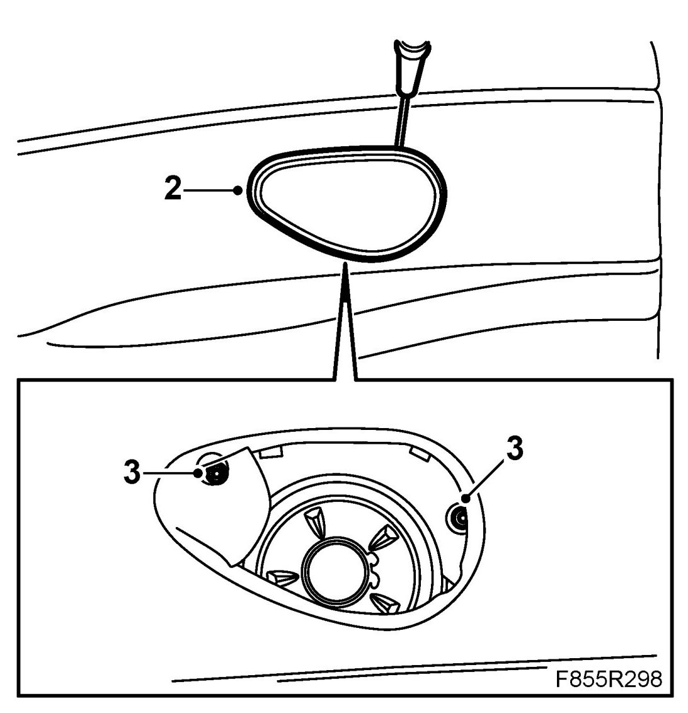
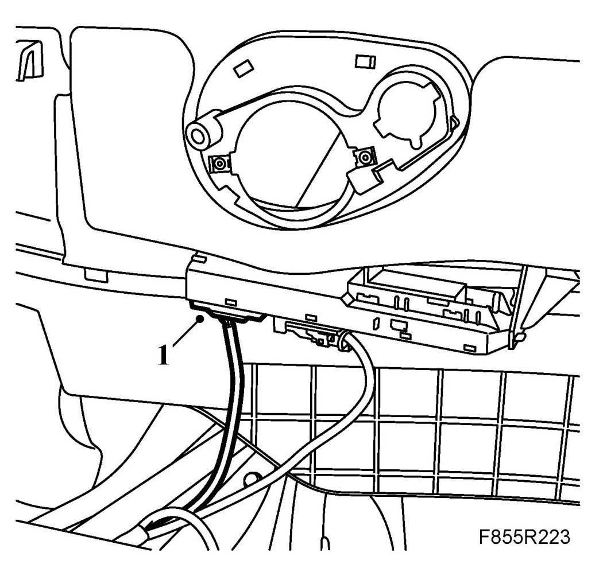
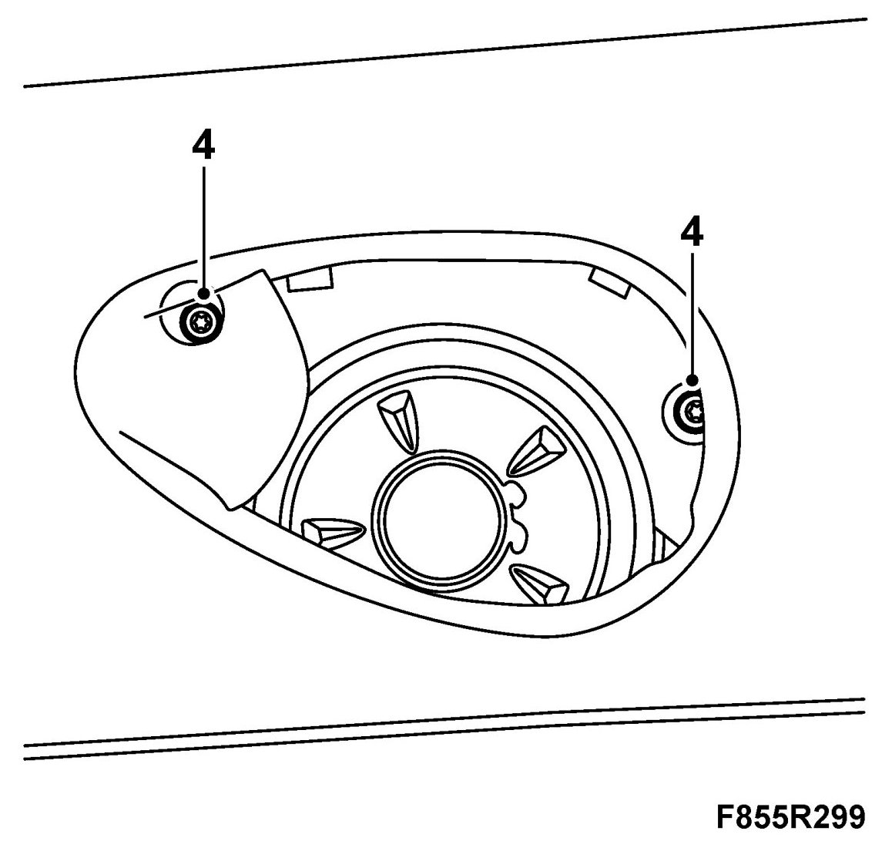
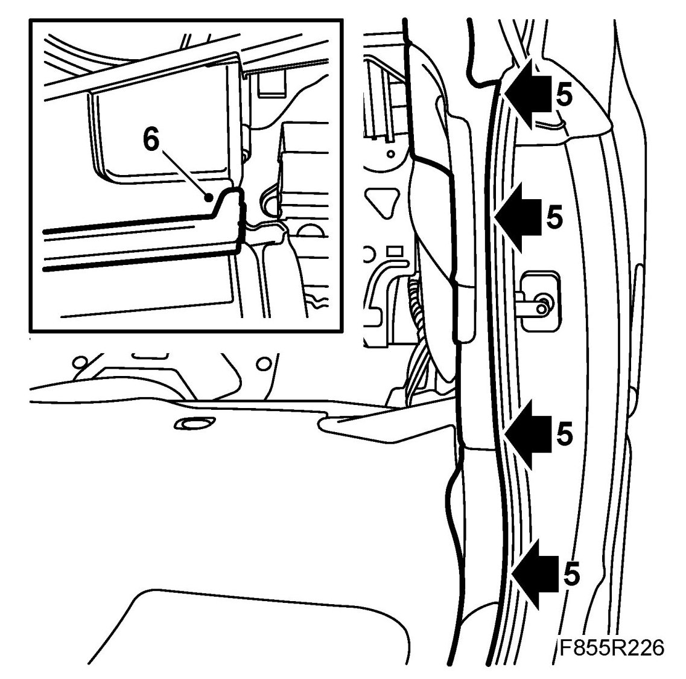

Rear Side Trim, CV
Rear Side Trim, CV
To remove
1. Remove the rear seat back rest and seat cushion.
2. Remove the speaker grille. Use 82 93 474 Removal tool.

3. Remove the rear side trim screws.
4. Lift up the side trim. Retain the rubber protectors.
5. Remove the loudspeaker cables.
6. Unplug the door module connector.
IMPORTANT: Take care when releasing the locking mechanism on the connector so as not to damage the connector. Pull the halves straight apart to avoid bending the pins. For further information regarding connectors, refer to Connectors, handling and inspection.
To fit
NOTE: Check that the water barriers are intact. Damaged water barriers must be replaced.
1. Plug in the door module.

IMPORTANT: Take care when plugging in the connector so as not to damage or press out the pins/sleeves in the connector. For further information regarding connectors, refer to Connectors, handling and inspection.
2. Connect the loudspeaker cable.
3. Hook the side trim into the guide and press down. Check that the rubber protectors are in place.
4. Fit the screws fastening the side trim.

5. Fold the inside lip of the door opening seal over the front edge of the side trim.

6. Lift the mounting on the soft top cover seal over the side trim.
7. Fit the loudspeaker grille.
8. Fit the rear seat seat cushion and back rest.
9. Cars with pinch protection: Carry out pinch protection programming.